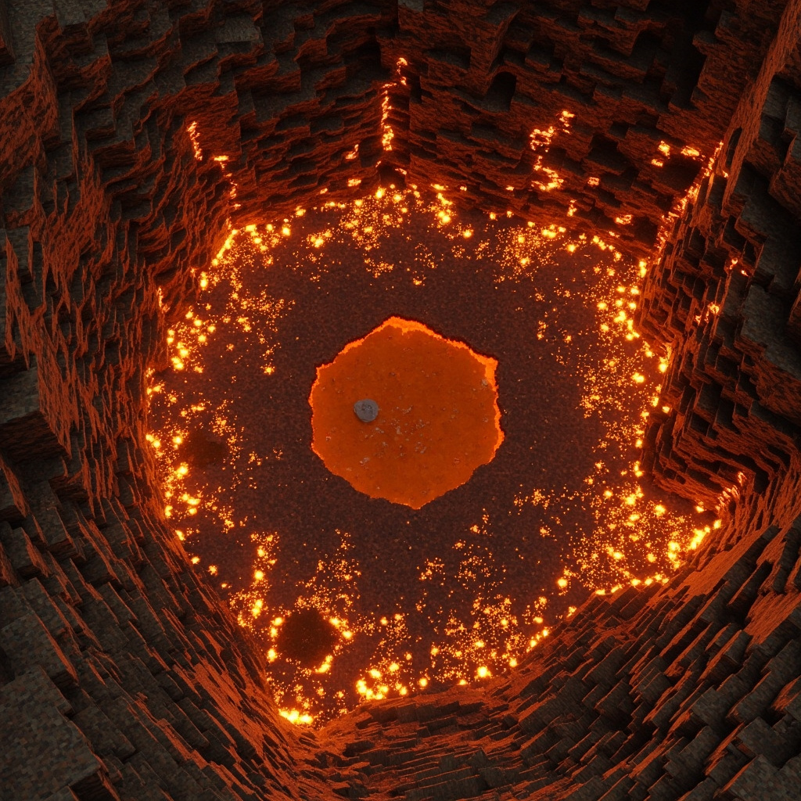

Every new 2B2T player builds their first base, logs off, and logs back in to find a crater. This isn't a glitch — it's the server. On an anarchy server without land claims or protections, griefing isn't a violation of rules. It's the entire point.
But veterans have bases that survive for months or even years. The difference isn't luck. It's a systematic approach to location, construction, access control, and operational security. This guide covers how to think about base protection on 2B2T, with specific techniques that work in the current server meta.
Location Strategy: The Most Important Decision
Where you build determines 80% of your base survivability. Most players build within 10,000 blocks of spawn because it's convenient. Those bases are found within hours. The key is balancing distance with accessibility.
Optimal Distance Ranges
- 0–10k from spawn — Guaranteed to be found within days. Only use for decoy bases or temporary stashes.
- 10k–100k — Found by random travelers within weeks. Decent for medium-term bases with good hiding.
- 100k–1M — Safe from casual discovery. Main base territory for experienced players. Most X-ray and highway travelers stop here.
- 1M+ — Extremely safe from random discovery, but travel time becomes a logistical burden. Worth it for main bases with significant time investment.
Axis Choice Matters
The X and Z axes (the cardinal highways) are the most traveled routes. The diagonals — X/Z combined — receive significantly less traffic. Building 300k in the X direction and 100k in the Z direction puts you off the main corridors in multiple dimensions.
Underground vs. Aboveground
Aboveground bases on 2B2T are spotted immediately by anyone flying overhead or using a map renderer. Underground bases, especially at Y-level -30 to -50 in deepslate layers, are invisible to most surface-level exploration. The tradeoff is that digging and building underground takes significantly longer.
Construction Techniques
The Hidden Entrance
The single most effective protection technique is making your entrance invisible. A door in a cliff face is obvious. An entrance behind a waterfall, inside a lava pool you can fire-resist through, or accessible only by a specific minecart track from a random location — those require the raider to know exactly what they're looking for.
Multi-Layer Defense
A single layer of obsidian is a speed bump. Veterans build in layers:
- Layer 1 (Camouflage) — blend the outer walls into natural terrain. Deepslate gray blends into deepslate caves. Blackstone blends into basalt deltas.
- Layer 2 (Obstruction) — obsidian or reinforced deepslate outer shell. Enough to stop casual break-ins.
- Layer 3 (Water or Lava) — a fluid layer between walls slows digging and causes inventory problems for raiders.
- Layer 4 (Inner Core) — chests and valuables behind an additional obsidian wall, ideally with a separate entrance code or mechanism.
Portal Security
Nether portals are a common point of entry. If your base has a portal, hide it in a separate sealed room — not in your main storage area. Better yet, use a portal-less Nether roof route to reach your base from an unmarked Nether location.
Operational Security (OpSec)
Even a perfectly hidden base gets found if you're careless about how you use it. OpSec on 2B2T is about minimizing the digital footprint between you and your base.
Coordinate Discipline
Never share base coordinates — not in chat, not in DMs, not on Discord, not with "trusted" friends. The most common way bases get griefed is through a trust violation. If you must share, restrict it to one person you've played with for months, and use end-to-end encrypted chat.
Travel Patterns
If you always log out at your base and log in at your base, anyone observing your connection patterns can triangulate your location. Log out at a random intermediate point and travel to your base in a single session. Reverse the process when logging out.
Don't Build Landmarks
Tall towers, unusual terrain modifications, obvious lighting patterns through cave ceilings — these are landmarks that stand out on map renders and draw exactly the kind of attention you don't want. Keep your base footprint as small and natural as possible.
Decoy Bases and Stashes
Smart players don't put all their resources in one location. The decoy base strategy involves building a small, obvious base with a moderate amount of loot. Raiders who find it think they got your main stash and leave without looking further. Your real valuables are in a completely separate, hidden location.
A practical split:
- Decoy base — within 50k of spawn, moderate loot (iron, some diamonds, basic tools), unprotected
- Operational base — at 200k+, crafting area, farms, enchanting setup
- Vault — at 500k+ in a completely different direction, buried deep underground, containing your most valuable items
When You Get Found
Every 2B2T player eventually loses a base. When it happens — and it will — how you respond determines whether you bounce back or quit.
- Don't log in to investigate immediately. If someone found your base, they might be waiting for you to return and collect your remaining items (called "baiting").
- Assume everything is compromised. If they found one base location, they may have found others. Change your OpSec patterns immediately.
- Cut your losses. Don't spend hours trying to salvage a base that's known. Move on. Build somewhere new with the lessons learned.
- Analyze how they found you. Was your entrance visible? Did you tell someone? Were you careless in chat? The only failure is repeating the same mistake.
The Reality of 2B2T Base Protection
The best-protected bases on 2B2T follow a simple philosophy: be boring. A boring base in a boring location with no unusual features and zero player traffic is a base that survives. Flashy megabases get destroyed within days. A simple 5x5 room with a bed, a crafting table, and a furnace at 400k off-axis will outlast any monument.
Start with survival basics in our Survival Guide, then graduate to the full Base Security Guide for detailed construction blueprints.